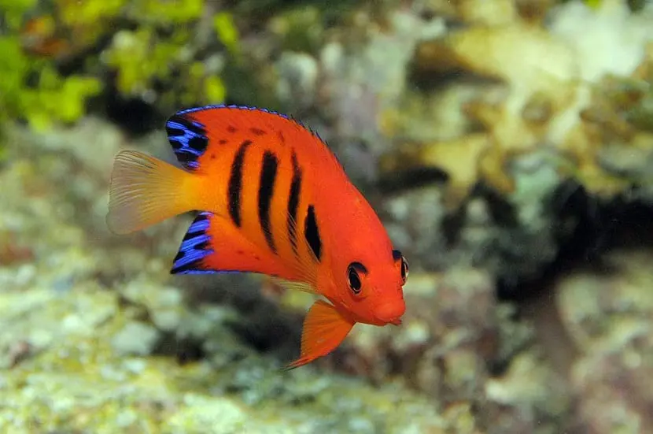

Los peces mas lindos segun nuestra audiencia
-
Mandarin
El mandarín o también llamado dragonet es uno de los peces más bellos del mundo, tiene especie de plumas como aletas y colores tan vibrantes que parecen fosforescentes. Habita en el norte Australia y le encanta mimetizarse con los arrecifes del entorno, en una amistosa competencia por quien es mejor parecido. Es un pez tropical de pequeño tamaño con carácter tímido, que prefiere aparecer en las noches cuando es el momento de aparearse. -
Llama de Angel

Como su nombre lo dice, este pez es todo fuego. Su rojo-naranja vibrante no pasa desapercibido ni a distancia, es como una señal de peligro que no tiene nada de peligrosa. Es un pez con cuerpo aplanado de agua salada que vive debajo de la superficie en el Océano Pacífico y su lugar favorito para hacer vida es en las lagunas y arrecifes de Hawaii. -
Loro
El pez loro es uno de los peces más adorables de la vida marina, gracias a que tiene una boca salida en forma de pico pero que al mismo tiempo parecieran labios. Estos peces no sólo engalanan el escenario donde habitan, sino que son muy importantes para la supervivencia de los arrecifes coralinos debido a que son los que comen algunos tipos de algas y otras plagas que pueden destruir estos preciados ecosistemas. -
Payaso
El pez payaso es tan especial, colorido y bonito que fue la inspiración de uno de los personajes más importantes en el cine animado actual. El personaje de Nemo y su padre en la película Buscando a Nemo. El pez payaso tiene una biología única, su sexo puede cambiar entre macho y hembra. Forman colonias familiares en donde el macho es quien protege a las crías... igual que en la encantadora película. -
Mariposa
Se trata de uno de los peces de agua salada más populares en la acuariofilia marina. A diferencia de algunos ejemplares mencionados, el pez mariposa narizona o pez mariposa de nariz alargada no es una especie amenazada. Vive en arrecifes coralinos y normalmente se desplazan en parejas, exceptuando los más jóvenes, que viajan en grupo. -
Cirujano

Los cirujanos azules son pequeños peces que viven en arrecifes de coral en el Indo-Pacífico. Los animales son fáciles de divisar gracias a su coloración vibrante característica que consta de colores azul real y amarillo canario. Los notorios patrones de color del cirujano azul no son tan fiables como crees. Por ejemplo, la coloración de los cirujanos azules jóvenes es amarilla brillante. Y, de adultos, el color de los peces cambia a azul más oscuro y violetas como señal de estrés. -
Banggai
Este pez es tan elegante como magnífico. No sólo físicamente, sino también en comportamiento, esta especie de pez, tiene ese regio y elegante porte real asiático que hablan las leyendas antiguas. Es nativo de las Islas Banggai de Indonesia, por eso lleva su nombre. Lamentablemente en su estado más salvaje, se encuentra en peligro de extinción debido a la pesca desmedida para importarlos a diferentes acuarios del mundo y a la fatal pesca de arrastre.
Acuario Flipper